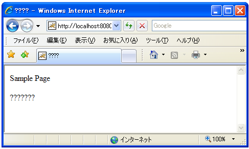
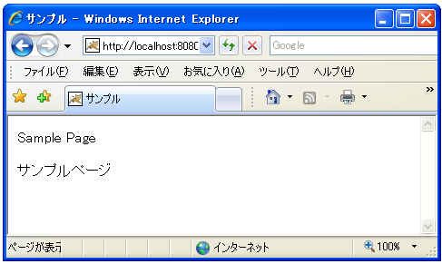

コンテンツタイプã�®è¨å®š(setContentType)
クライアントã�«å¯¾ã�—ã�¦ä½•ã�‹å‡ºåŠ›ã�™ã‚‹ã�«ã�‚ã�Ÿã�£ã�¦ã�¾ã�šè¡Œã�†ã�¹ã��事ã�¯ã�©ã�®ã‚ˆã�†ã�ªãƒ‡ãƒ¼ã‚¿ã‚’é€�ã‚‹ã�®ã�‹ã‚’指定ã�™ã‚‹ã‚³ãƒ³ãƒ†ãƒ³ãƒ„タイプã�®è¨å®šã�§ã�™ã€‚HTTPレスãƒ�ンスヘッダã�®ä¸ã�®ã€ŒContent-Typeã€�ã‚’è¨å®šã�—ã�¾ã�™ã€‚
コンテンツタイプ��次�よ��種���り��。
| 種é¡� | æ‹¡å¼µå� | Content-Type |
|---|---|---|
| HTMLファイル | html, htm | text/html |
| テã‚ストファイル | txt | text/plain |
| GIF | gif | image/gif |
| PNG | png | image/png |
| Windows 実行ファイル | exe | application/octet-stream |
クライアントã�¯å�—ã�‘å�–ã�£ã�Ÿãƒ‡ãƒ¼ã‚¿ã�®ãƒ˜ãƒƒãƒ€ãƒ¼ã�«å�«ã�¾ã‚Œã‚‹ã‚³ãƒ³ãƒ†ãƒ³ãƒ„タイプを見ã�¦ã€�データをã�©ã�®ã‚ˆã�†ã�«ã�™ã‚‹ã�‹ã‚’処ç�†ã�™ã‚‹ã�‹ã‚’判別ã�—ã�¾ã�™ã€‚例ã�ˆã�°ãƒ–ラウザã�«è¡¨ç¤ºã�—ã�Ÿã‚Šã€�ファイルã�«ä¿�å˜ã�™ã‚‹ã�‹ã�©ã�†ã�‹ã‚’確èª�ã�—ã�Ÿã‚Šã€�ã�¨ã�„ã�£ã�Ÿã�“ã�¨ã�§ã�™ã€‚ã�“ã�®æŒ™å‹•ã�¯ãƒ–ラウザやクライアントå�´ã�®è¨å®šã�«ä¾�å˜ã�—ã�¾ã�™ã€‚
コンテンツタイプをè¨å®šã�™ã‚‹ã�«ã�¯ã€ŒHttpServletResponseã€�インターフェースã�®è¦ªã‚¤ãƒ³ã‚¿ãƒ¼ãƒ•ã‚§ãƒ¼ã‚¹ã�§ã�‚る「ServletResponseã€�インタフェースã�§å®šç¾©ã�•ã‚Œã�¦ã�„る「setContentTypeã€�メソッドを使ã�„ã�¾ã�™ã€‚
setContentType public void setContentType(java.lang.String type)
Sets the content type of the response being sent to the client, if the response has not been committed yet. The given content type may include a character encoding specification, for example, text/html;charset=UTF-8. The response's character encoding is only set from the given content type if this method is called before getWriter is called. This method may be called repeatedly to change content type and character encoding. This method has no effect if called after the response has been committed. It does not set the response's character encoding if it is called after getWriter has been called or after the response has been committed. Containers must communicate the content type and the character encoding used for the servlet response's writer to the client if the protocol provides a way for doing so. In the case of HTTP, the Content-Type header is used. Parameters: type - a String specifying the MIME type of the content
実際ã�«ä½¿ã�†å ´å�ˆã�«ã�¯æ¬¡ã�®ã‚ˆã�†ã�«è¨˜è¿°ã�—ã�¾ã�™ã€‚
import java.io.*;
import javax.servlet.*;
import javax.servlet.http.*;
public class Sample extends HttpServlet {
public void doGet(HttpServletRequest request, HttpServletResponse response)
throws IOException, ServletException{
response.setContentType("text/html");
/* ... */
}
}
ã�¾ã�Ÿã‚³ãƒ³ãƒ†ãƒ³ãƒ„タイプã�®ä¸ã�«ã�¯å�«ã�¾ã‚Œã‚‹ãƒ‡ãƒ¼ã‚¿ã�®æ–‡å—セットをå�ˆã‚�ã�›ã�¦æŒ‡å®šã�§ã��ã‚‹ã‚‚ã�®ã�Œã�‚ã‚Šã�¾ã�™ã€‚例ã�ˆã�°HTMLファイルやテã‚ストファイルã�§ã�™ã€‚æ–‡å—コードをå�ˆã‚�ã�›ã�¦æŒ‡å®šã�™ã‚‹å ´å�ˆã�«ã�¯æ¬¡ã�®ã‚ˆã�†ã�«ã€Œcharset=ã€�ã�®å¾Œã�«æ–‡å—コードを記述ã�—ã�¾ã�™ã€‚
response.setContentType("text/html;charset=Shift_JIS");
※文å—コードã�®ç¨®é¡�ã�«ã�¤ã�„ã�¦ã�¯ã€�IANA character-setsã€�ã�ªã�©ã‚’å�‚考ã�«ã�—ã�¦ä¸‹ã�•ã�„。
æ–‡å—コードをè¨å®šã�—ã�ªã�‹ã�£ã�Ÿå ´å�ˆã�«ã�¯æ¬¡ã�®ãƒšãƒ¼ã‚¸ã�§èª¬æ˜�ã�™ã‚‹é€šã‚Šãƒ‡ãƒ¼ã‚¿æœ¬æ–‡ã�Œã€ŒISO-8859-1(Latin1)ã€�ã�§ã‚¨ãƒ³ã‚³ãƒ¼ãƒ‰ã�•ã‚Œã�¾ã�™ã€‚ã��ã�®ç‚ºã€�日本èª�を扱ã�†ãƒ‡ãƒ¼ã‚¿ã�®å ´å�ˆã�¯æ–‡å—化ã�‘ã�—ã�¦ã�—ã�¾ã�„ã�¾ã�™ã�®ã�§æ³¨æ„�ã�—ã�¦ä¸‹ã�•ã�„。
setCharacterEncodingメソッド
æ–‡å—セットã�®æŒ‡å®šã�«ã�¯ã€ŒHttpServletResponseã€�インターフェースã�®è¦ªã‚¤ãƒ³ã‚¿ãƒ¼ãƒ•ã‚§ãƒ¼ã‚¹ã�§ã�‚る「ServletResponseã€�インタフェースã�§å®šç¾©ã�•ã‚Œã�¦ã�„る「setCharacterEncodingã€�メソッドを使ã�£ã�¦ã‚‚è¨å®šã�Œå�¯èƒ½ã�§ã�™ã€‚
setCharacterEncoding public void setCharacterEncoding(java.lang.String charset)
Sets the character encoding (MIME charset) of the response being sent to
the client, for example, to UTF-8. If the character encoding has already
been set by setContentType(java.lang.String) or setLocale(java.util.Locale),
this method overrides it. Calling setContentType(java.lang.String) with
the String of text/html and calling this method with the String of UTF-8
is equivalent with calling setContentType with the String of
text/html; charset=UTF-8.
This method can be called repeatedly to change the character encoding.
This method has no effect if it is called after getWriter has been called
or after the response has been committed.
Containers must communicate the character encoding used for the servlet
response's writer to the client if the protocol provides a way for doing
so. In the case of HTTP, the character encoding is communicated as part
of the Content-Type header for text media types. Note that the character
encoding cannot be communicated via HTTP headers if the servlet does not
specify a content type; however, it is still used to encode text written
via the servlet response's writer.
Parameters:
charset - a String specifying only the character set defined by IANA
Character Sets (http://www.iana.org/assignments/character-sets)
使�方����次�よ���り��。
response.setContentType("text/html");
response.setCharacterEncoding("Shift_JIS");
ã�“ã‚Œã�¯æ¬¡ã�®ã‚ˆã�†ã�«è¨˜è¿°ã�—ã�Ÿå ´å�ˆã�¨ã�¾ã�£ã�Ÿã��å�Œã�˜ã�§ã�™ã€‚
response.setContentType("text/html;charset=Shift_JIS");
サンプルプãƒã‚°ãƒ©ãƒ
ã�§ã�¯ç°¡å�˜ã�ªã‚µãƒ³ãƒ—ルã�§è©¦ã�—ã�¦è¦‹ã�¾ã�™ã€‚今å›�ã�¯æ–‡å—コードをè¨å®šã�—ã�Ÿå ´å�ˆã�¨ã�—ã�ªã�‹ã�£ã�Ÿå ´å�ˆã�§ãƒ–ラウザã�§ã�®å‡ºåŠ›ã‚’比較ã�—ã�¾ã�™ã€‚
import java.io.*;
import javax.servlet.*;
import javax.servlet.http.*;
public class ResponseSample1 extends HttpServlet {
public void doGet(HttpServletRequest request, HttpServletResponse response)
throws IOException, ServletException{
response.setContentType("text/html");
PrintWriter out = response.getWriter();
StringBuffer sb = new StringBuffer();
sb.append("<html>");
sb.append("<head>");
sb.append("<title>サンプル</title>");
sb.append("</head>");
sb.append("<body>");
sb.append("<p>Sample Page</p>");
sb.append("<p>サンプルページ</p>");
sb.append("</body>");
sb.append("</html>");
out.println(new String(sb));
out.close();
}
}
import java.io.*;
import javax.servlet.*;
import javax.servlet.http.*;
public class ResponseSample2 extends HttpServlet {
public void doGet(HttpServletRequest request, HttpServletResponse response)
throws IOException, ServletException{
response.setContentType("text/html; charset=Shift_JIS");
PrintWriter out = response.getWriter();
StringBuffer sb = new StringBuffer();
sb.append("<html>");
sb.append("<head>");
sb.append("<title>サンプル</title>");
sb.append("</head>");
sb.append("<body>");
sb.append("<p>Sample Page</p>");
sb.append("<p>サンプルページ</p>");
sb.append("</body>");
sb.append("</html>");
out.println(new String(sb));
out.close();
}
}
2ã�¤ã�®ã‚µãƒ³ãƒ—ルプãƒã‚°ãƒ©ãƒ ã�®é�•ã�„ã�¯ã€ŒsetContentTypeã€�メソッドã�®å¼•æ•°ã�«æ–‡å—セットを指定ã�—ã�¦ã�„ã‚‹ã�‹ã�©ã�†ã�‹ã�§ã�™ã€‚
サンプルプãƒã‚°ãƒ©ãƒ をコンパイルã�—ã�¦ä½œæˆ�ã�—ã�Ÿã€ŒResponseSample1.classã€�ファイルã�¨ã€ŒResponseSample2.classã€�ファイルを別途作æˆ�ã�—ã�Ÿã€Œweb.xmlã€�ファイルを次ã�®ã‚ˆã�†ã�«é…�ç½®ã�—ã�¾ã�™ã€‚
D:¥ -- servlet-sample
|
+-- WEB-INF
|
+-- (web.xml)
|
+-- classes
|
+-- (ResponseSample1.class)
|
+-- (ResponseSample2.class)
web.xmlファイル�次�よ���り��。
<?xml version="1.0" encoding="ISO-8859-1"?>
<web-app xmlns="http://java.sun.com/xml/ns/j2ee"
xmlns:xsi="http://www.w3.org/2001/XMLSchema-instance"
xsi:schemaLocation="http://java.sun.com/xml/ns/j2ee
http://java.sun.com/xml/ns/j2ee/web-app_2_4.xsd"
version="2.4">
<servlet>
<servlet-name>ResponseSample1</servlet-name>
<servlet-class>ResponseSample1</servlet-class>
</servlet>
<servlet-mapping>
<servlet-name>ResponseSample1</servlet-name>
<url-pattern>/ResponseSample1</url-pattern>
</servlet-mapping>
<servlet>
<servlet-name>ResponseSample2</servlet-name>
<servlet-class>ResponseSample2</servlet-class>
</servlet>
<servlet-mapping>
<servlet-name>ResponseSample2</servlet-name>
<url-pattern>/ResponseSample2</url-pattern>
</servlet-mapping>
</web-app>
コンテã‚ストファイルを作æˆ�ã�—「(Tomcatをインストールã�—ã�Ÿãƒ‡ã‚£ãƒ¬ã‚¯ãƒˆãƒª)¥Tomcat 5.5¥conf¥Catalina¥localhost¥ã€�ディレクトリã�«ã€Œsample.xmlã€�ファイルã�¨ã�—ã�¦ä¿�å˜ã�—ã�¾ã�™ã€‚内容ã�¯ä»¥ä¸‹ã�®é€šã‚Šã�§ã�™ã€‚
<Context path="/sample" docBase="d:/servlet-sample/sample"> </Context>
準備�以上��。��Tomcatを�起動���ら「http://localhost:8080/sample/ResponseSample1��ブラウザ�アクセス��下��。

コンテンツタイプã�®æ–‡å—コードã�Œè¨å®šã�•ã‚Œã�¦ã�„ã�ªã�‹ã�£ã�Ÿã�Ÿã‚�データ本文ã�¯Latin1ã�§ã‚¨ãƒ³ã‚³ãƒ¼ãƒ‰ã�•ã‚Œã�¦ã‚¯ãƒ©ã‚¤ã‚¢ãƒ³ãƒˆã�«é€�られã�¦ã��ã�¾ã�™ã€‚ã��ã�®ç‚ºã€�日本èª�ã�¯æ–‡å—化ã�‘ã�—ã�¦è¡¨ç¤ºã�•ã‚Œã�¦ã�—ã�¾ã�„ã�¾ã�™ã€‚
��「http://localhost:8080/sample/ResponseSample2��ブラウザ�アクセス��下��。

今度ã�¯é�©åˆ‡ã�ªæ–‡å—コードã�Œè¨å®šã�•ã‚Œã�¦ã�„ã�¾ã�™ã�®ã�§æ—¥æœ¬èª�ã�Œå�«ã�¾ã‚Œã‚‹ãƒ‡ãƒ¼ã‚¿ã‚’ブラウザã�«è¿”ã�—ã�Ÿå ´å�ˆã�§ã‚‚ã€�æ–‡å—化ã�‘ã�›ã�šã�«è¡¨ç¤ºã�•ã‚Œã�¾ã�™ã€‚
( Written by Tatsuo Ikura )

著者 / TATSUO IKURA
åˆ�心者ï½�ä¸ç´šè€…ã�®æ–¹ã‚’対象ã�¨ã�—ã�Ÿãƒ—ãƒã‚°ãƒ©ãƒŸãƒ³ã‚°æ–¹æ³•ã‚„開発環境ã�®æ§‹ç¯‰ã�®è§£èª¬ã‚’è¡Œã�†ã‚µã‚¤ãƒˆã�®é�‹å–¶ã‚’è¡Œã�£ã�¦ã�„ã�¾ã�™ã€‚